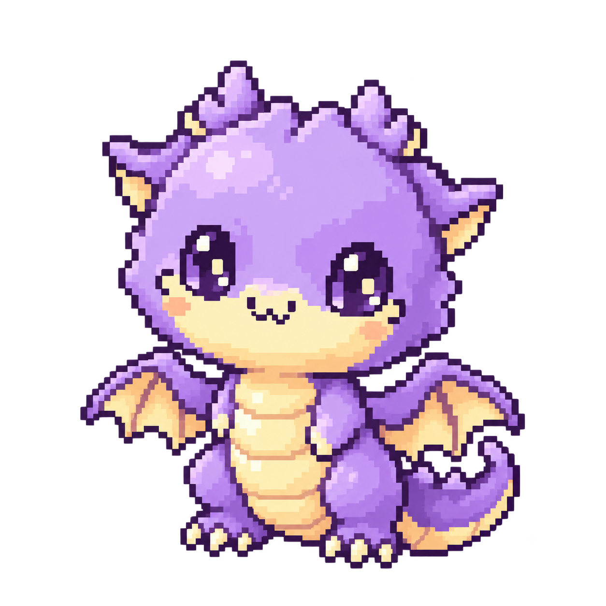

新版 · 透明 PNG

方格由本頁 CSS 顯示，並非圖片背景。原檔 1254 × 1254，RGBA。
下載透明 PNG此幼年 v1 方向未採用。 依原手繪造型製作的成年龍像素轉繪稿已確認，待機、表情、睡眠及死亡素材現已接入 Web；最新進度見成年全部狀態總覽。本頁保留舊稿試放記錄。
保留圓潤大頭、小角、大眼、雙翼與捲尾，以薰衣草紫與奶油黃重新繪製彩色像素靜態稿。
這是獨立美術檢視頁，尚待確認角色辨識度、像素密度與場景融合。此處只展示同一張幼年靜態圖。

方格由本頁 CSS 顯示，並非圖片背景。原檔 1254 × 1254，RGBA。
下載透明 PNG舊版保留 64 × 44 遮罩，用封閉區域填色與深色外框呈現；主要缺少依體積設計的明暗、翅膜材質與細緻輪廓。
新版保留核心配色與幼態比例，新增左上暖光、下顎及尾巴冷紫暗面、腹部柔和分節。色票為設計方向，生成圖未經固定色盤量化。


地面陰影由本頁 CSS 獨立提供，未烘焙進 PNG。確認這張基礎造型後，再固定畫布、腳底錨點與色盤，延伸待機／睡眠／生病狀態。